Welcome to the Tutorials section where you can find Silverlight tutorials
- Silverlight for Windows Phone 7
-
 Windows Phone 7 brings the world of Silverlight to the Mobile Platform allowing Silverlight-based applications to be ran on a Mobile
device or the Windows Phone Emulator. The tutorials here are built using C# however when support for Visual Basic is added to the
Developer Tools they will be updated for this instead.
Windows Phone 7 brings the world of Silverlight to the Mobile Platform allowing Silverlight-based applications to be ran on a Mobile
device or the Windows Phone Emulator. The tutorials here are built using C# however when support for Visual Basic is added to the
Developer Tools they will be updated for this instead.
Build Silverlight applications for Windows Phone 7 devices using Microsoft Visual Studio 2010 Express for Windows Phone.
Windows Phone Developer Tools Beta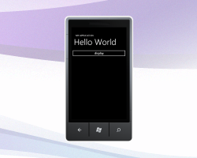Hello WorldBeginner
Classic "Hello World" Example for Windows Phone 7 in Silverlight!
Emulator or Device Compatible
Added 16th March 2010, Updated 13th July 2010
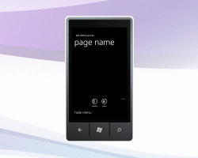Application BarBeginner
Windows Phone 7 Application Bar Example
Based on Application Bar sample by Microsoft
Emulator or Device Compatible
Added 23rd March 2010, Updated 13th July 2010
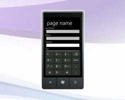Input ScopeBeginner
Using Keyboard Input Scope with Windows Phone 7
Based on an example by Tim Heuer
Emulator or Device Compatible
Added 30th March 2010, Updated 16th July 2010
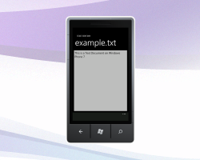Text EditorIntermediate
Text Editing application with New, Open and Save on Windows Phone 7
Emulator or Device Compatible
Added 30th March 2010, Updated 16th July 2010
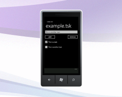Task ListIntermediate
XML-based Task List application with New, Open, Save, Add and Remove items using Linq-to-XML on Windows Phone 7
Emulator or Device Compatible
Added 6th April 2010, Updated 18th July 2010
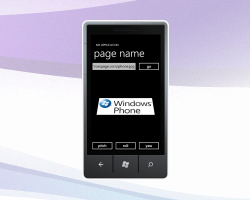ImagerBeginner
Simple Image Viewer with Projection Animation for Windows Phone 7
Based on 3D Effects example by VectorLight.net
Emulator or Device Compatible
Added 6th April 2010, Updated 18th July 2010
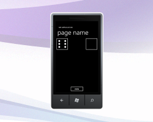Lucky DiceBeginner
Create simple random Dice rolling game using Silverlight on Windows Phone 7
Emulator or Device Compatible
Added 13th April 2010, Updated 19th July 2010
 Lucky Lotto
Lucky LottoBeginner
Lotto numbers chooser with UK Lotto coloured Balls using Silverlight on Windows Phone 7
Emulator or Device Compatible
Added 13th April 2010, Updated 19th July 2010
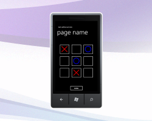Noughts and CrossesIntermediate
Noughts and Crosses or Tic-Tac-Toe with Winner / Draw rules applied using Silverlight on Windows Phone 7
Emulator or Device Compatible
Added 20th April 2010, Updated 19th July 2010
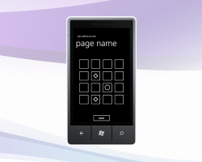Memory GameIntermediate
Memory Game with Random Shape Matching using Silverlight on Windows Phone 7
Emulator or Device Compatible
Added 20th April 2010, Updated 19th July 2010
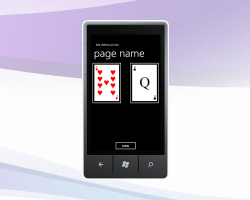Playing CardsIntermediate
Simple Playing Cards Matching Game using Silverlight on Windows Phone 7
Emulator or Device Compatible
Added 27th April 2010, Updated 19th July 2010
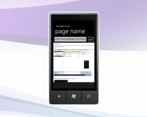Web BrowserBeginner
Simple Web Browser using Silverlight on Windows Phone 7
Emulator or Device Compatible
Added 27th April 2010, Updated 19th July 2010
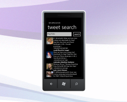Tweet SearchBeginner
Simple Twitter® Search Application using Silverlight on Windows Phone 7
Emulator or Device Compatible
Added 4th May 2010, Updated 19th July 2010
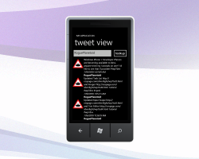Tweet ViewBeginner
Simple Twitter® Viewer using Silverlight on Windows Phone 7
Emulator or Device Compatible
Added 4th May 2010, Updated 19th July 2010
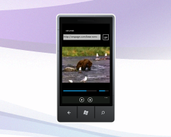mPlayerBeginner
Audio and Video Media Player using Silverlight on Windows Phone 7
Emulator or Device Compatible
Added 11th May 2010, Updated 20th July 2010
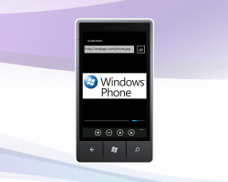Slide ShowIntermediate
Photo Viewer and Slideshow Application using Silverlight on Windows Phone 7
Emulator or Device Compatible
Added 11th May 2010, Updated 20th July 2010
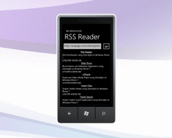RSS ReaderBeginner
RSS Feed Reader using Silverlight on Windows Phone 7
Emulator or Device Compatible
Added 18th May 2010, Updated 20th July 2010
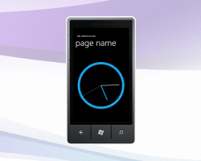Analogue ClockIntermediate
Analogue Clock using Silverlight on Windows Phone 7
Emulator or Device Compatible
Added 18th May 2010, Updated 20th July 2010
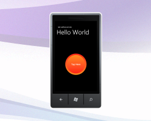Control TemplateBeginner
Create Button with a custom Control Template and Visual State Manager using Silverlight on Windows Phone 7
Emulator or Device Compatible
Added 25th May 2010, Updated 20th July 2010
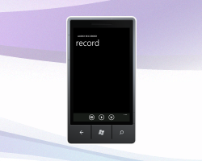Audio RecorderBeginner
Audio Recording with XNA using Silverlight on Windows Phone 7
Based on an example from rongchaua.net and XNA Forums
Emulator or Device Compatible
Added 25th May 2010, Updated 20th July 2010
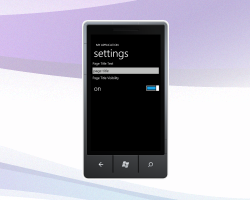Application SettingsBeginner
Windows Phone 7 Application Settings Example
Emulator or Device Compatible
Added 1st June 2010, Updated 21st July 2010
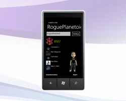Gamer CardIntermediate
Simple Gamer Card Xbox LIVE® application using Silverlight on Windows Phone 7
Emulator or Device Compatible
Added 1st June 2010, Updated 23rd July 2010
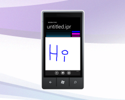Doodle PadIntermediate
Simple Drawing Package with InkPresenter using Silverlight on Windows Phone 7
Emulator or Device Compatible
Added 8th June 2010, Updated 23rd July 2010
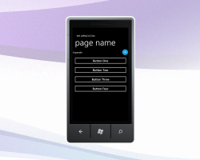Expander ControlBeginner
Expander Custom Control using Silverlight on Windows Phone 7
Emulator or Device Compatible
Added 8th June 2010, Updated 24th July 2010
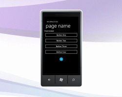FlipPanel ControlBeginner
FlipPanel Custom Control using Silverlight on Windows Phone 7
Emulator or Device Compatible
Added 15th June 2010, Updated 24th July 2010
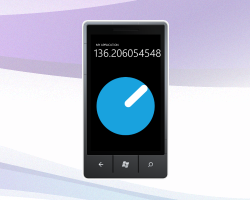Dial ControlBeginner
Dial Custom Control using Silverlight on Windows Phone 7
Based on an Example from HackingSilverlight.net
Emulator or Device Compatible
Added 15th June 2010, Updated 25th July 2010
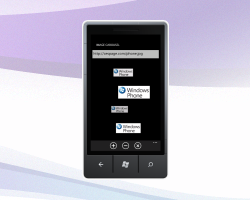Image CarouselBeginner
Image Carousel using Silverlight on Windows Phone 7
Emulator or Device Compatible
Added 22nd June 2010, Updated 25th July 2010
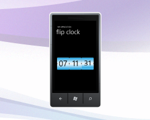Flip ClockBeginner
70's style Flip Clock using Silverlight on Windows Phone 7
Emulator or Device Compatible
Added 22nd June 2010, Updated 25th July 2010
Suggest TutorialBeginner, Intermediate or Advanced
Suggest your idea on Twitter with the Hashtag #cpesl.
It can be anything supported by Silverlight on Windows Phone 7!Emulator Compatible and/or Device Required
- Microsoft Silverlight 4
-
 Microsoft Silverlight brings the best of Windows Presentation Framework (WPF) to the Browser, build Browser-based applications or even Out-of-Browser Experiences using Silverlight
technology.
Microsoft Silverlight brings the best of Windows Presentation Framework (WPF) to the Browser, build Browser-based applications or even Out-of-Browser Experiences using Silverlight
technology.
Silverlight works on all the popular Browsers and also works on Mac and Windows. The tutorials here are built using Visual Basic, although it is possible to write applications using C#.
Build Silverlight applications using Microsoft Visual Web Developer 2010 Express or Visual Studio 2010 as all these tutorials will work in either version.
Silverlight 4 Release Candidate is now available, some of these tutorials may require modification to work in Visual Studio 2010, these will be updated when Visual Web Developer 2010 Express Edition has been fully released.
Visual Studio 2010 Express Downloads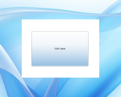Hello WorldBeginner
Classic "Hello World" Example using Silverlight!
Silverlight 3 Compatible
Added 24th November 2009
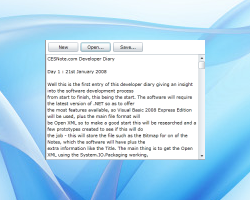Text Editor (Part One)Beginner
Text Editing application with New, Open and Save using Silverlight
Silverlight 3 Compatible
Added 8th December 2009
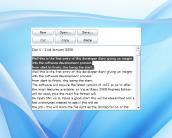Text Editor (Part Two)Beginner
Adding Clipboard Support to Text Editor with Cut, Copy and Paste
Silverlight 4 Required
Added 15th December 2009
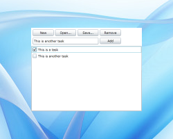Task ListIntermediate
XML-based Task List application with New, Open, Save, Add and Remove items using Linq-to-XML and Silverlight
Silverlight 3 Compatible
Added 15th December 2009
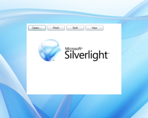ImagerBeginner
Simple Image Viewer with Projection Animation
Based on 3D Effects example by VectorLight.net
Silverlight 3 Compatible
Added 22nd December 2009
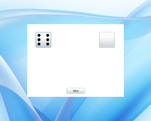Lucky DiceBeginner
Create simple random Dice rolling game using Silverlight
Silverlight 3 Compatible
Added 22nd December 2009
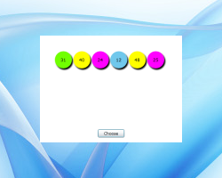Lucky LottoBeginner
Lotto numbers chooser with UK Lotto coloured Balls.
Silverlight 3 Compatible
Added 22nd December 2009
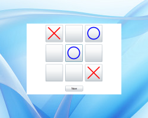Noughts and CrossesIntermediate
Noughts and Crosses or Tic-Tac-Toe a simple game with Winner / Draw rule detection.
Silverlight 3 Compatible
Added 29th December 2009
 Memory Game
Memory GameIntermediate
Memory Game with Random Shape Matching.
Silverlight 3 Compatible
Added 29th December 2009
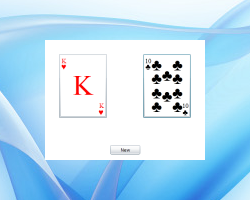Playing CardsIntermediate
Simple Playing Cards Matching Game.
Silverlight 3 Compatible
Added 29th December 2009
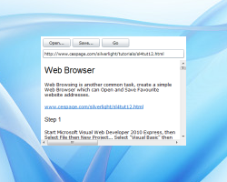Web BrowserBeginner
Simple Web Browser with Out-of-Browser Mode and Elevated Trust.
Silverlight 4 Required
Added 29th December 2009
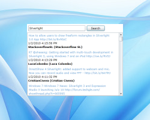Tweet SearchBeginner
Simple Twitter® Search Application.
Silverlight 3 Compatible
Added 5th January 2010
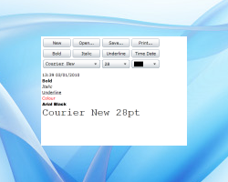Rich Text EditorIntermediate
Rich Text Editor with Formatting, Printing, Open/Save and more.
Based on Rich Text Text Editor and RichTextArea Hands-on-Lab by Microsoft Corporation
Silverlight 4 Required
Added 5th January 2010
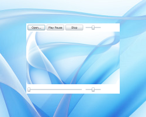mPlayerBeginner
Audio and Video Media Player using Silverlight.
Silverlight 3 Compatible
Added 5th January 2010
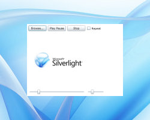Slide ShowIntermediate
Photo Viewer and Slideshow Application with Out-of-Browser Mode and Elevated Trust
Silverlight 4 Required
Added 5th January 2010
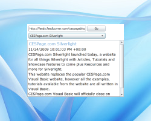RSS ReaderIntermediate
RSS Reader with Out-of-Browser Mode and Elevated Trust
Based on the Silverlight 2 SDK Syndication Feed Reader
Silverlight 3 Compatible / Silverlight 4 Supported
Added 12th January 2010
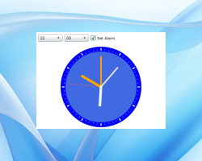Alarm ClockIntermediate
Silverlight Analogue Clock with Alarm
Based on Silverlight Analog Clock by Pencho Popadiyn
Silverlight 3 Compatible
Added 12th January 2010
Control TemplateBeginner
Create a Customised Button with Control Template and Visual State Manager in Silverlight
Silverlight 3 Compatible
Added 12th January 2010
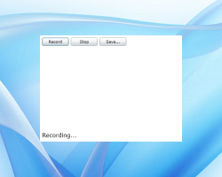Audio RecorderIntermediate
Audio Recording Application in Silverlight
Based on Silverlight Audio Recorder by Ondrej Svacina
Silverlight 4 Required
Added 12th January 2010
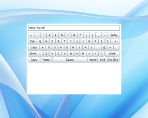Virtual KeyboardIntermediate
On-screen Keyboard for Silverlight
Silverlight 4 Required
Added 19th January 2010
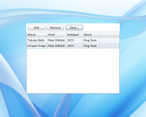Data BindingBeginner
Basic Databinding with DataGrid in Silverlight
Silverlight 3 Compatible
Added 26th January 2010
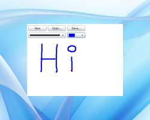Doodle PadBeginner
Basic Drawing Package using InkPresenter
Silverlight 3 Compatible
Added 2nd February 2010
Expander ControlBeginner
Expander Custom Control in Silverlight
Based on Expander Control by Matthew MacDonald
Silverlight 3 Compatible
Added 9th February 2010
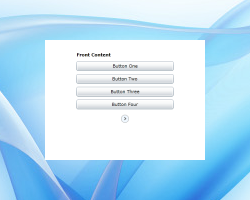FlipPanel ControlBeginner
FlipPanel Custom Control in Silverlight
Based on Flip Panel Control by Matthew MacDonald
Silverlight 3 Compatible
Added 16th February 2010
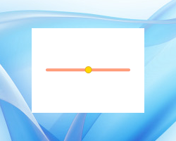Custom SliderBeginner
Customise the Silverlight Slider Control
Based on an example by Matthew MacDonald
Silverlight 3 Compatible
Added 23rd February 2010
Image CarouselBeginner
Image Carousel in Silverlight
Based on an example by Jeff Paries
Silverlight 3 Compatible
Added 2nd March 2010
Flip ClockBeginner
Silverlight 70's style Flip Clock
Based on an example by Jeff Paries
Silverlight 3 Compatible
Added 9th March 2010
- Tutorial Help
-
When "Click" is mentioned in a Tutorial, this means to move the Mouse Cursor or Arrow over the item to be "Clicked" then use the Left Mouse button, Right Click uses the Right mouse button instead. These will be the other way around if you are left-handed and have your mouse set up for this.
To start a Silverlight Project click on the "Play" button, you may also use the "Build" button beforehand to check for any errors or omissions before the project is Run.
To Stop a running Project, simply close the Browser window that contains the Silverlight project - if this does not work click on the "Blue Box" button on the Toolbar like a Stereo's Stop button.You may download the full Tutorial or just the Source Code, to use this once it is download just use a ".ZIP" compatible application or in Windows Explorer right-click on the File and choose the Extract option, once done open the Folder (if it is not opened already) and this contains the Solution File for the Source Code, or the contents of the Tutorial as a ".HTML" file.
You should keep each tutorial in its own folder such as Hello World or Tutorial 1.
- Tutorial Usage
-

All tutorials are licensed under a Creative Commons Attribution-Share Alike 3.0 Unported License.
Which briefly means you may Share these tutorials, there are "Share" links on each Tutorial page allowing the original version to be Shared. They may be remixed allowing you to expand upon and modify these tutorials. However Attribution is required for using the tutorials elsewhere or modifying them this should be in the form of a mention of "CESPage.com Silverlight" and / or a link to cespage.com/silverlight.
Many hours of work goes into the creation of a tutorial, which are available here for download offline or use online, so where possible link to the versions here, however the license does allow use elsewhere.